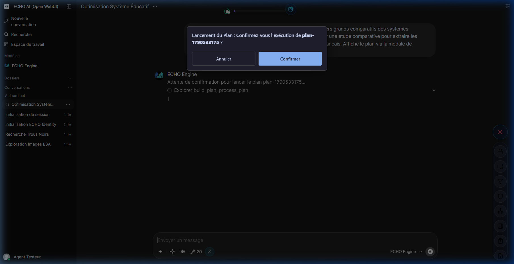

9. L'Arsenal des Outils

ECHO n'est pas un simple générateur de texte coincé dans une fenêtre de discussion. Il dispose d'un Arsenal : un ensemble d'outils (des "mains" et des "yeux") qui lui permettent d'interagir avec votre ordinateur, avec le Web et avec d'autres logiciels.
L'IA décide de manière autonome quand et comment utiliser ces outils pour répondre à vos besoins. Si vous lui posez une question complexe, elle peut enchaîner plusieurs actions (chercher sur le Web, lire un fichier, tester du code, générer un schéma) avant de vous fournir sa réponse finale.
Les 5 Piliers de l'Arsenal
L'écosystème des outils est structuré autour de cinq grandes thématiques de compétences :
📝 9a. Planification & Exécution
ECHO construit et maintient des plans d'action (check-lists) pour les projets au long cours. Il dispose également d'une Sandbox isolée pour générer et exécuter du code (Python, JS) en toute sécurité afin de tester ses solutions ou traiter vos données.
Explorer →🔍 9b. Recherche & Navigation
L'IA peut lancer des recherches souveraines sur le Web ou prendre le contrôle d'un Navigateur Fantôme pour lire des pages et cliquer sur des boutons comme un humain. Elle peut également lire et analyser en profondeur vos fichiers personnels (PDF, images).
Explorer →🎨 9c. Édition & Visuel
ECHO modifie dynamiquement votre interface pour afficher des cartes mentales et des diagrammes interactifs. Il déploie également l'éditeur Codex, un véritable logiciel de traitement de texte vous permettant de travailler à quatre mains sur de vastes documents.
Explorer →🧠 9d. Mémoire & Actions
Le système entretient une mémoire à long terme de vos préférences (Axiomes). Vous disposez également de boutons d'Actions rapides (Cockpit) pour purger cette mémoire chirurgicalement ou exporter d'un clic vos conversations en un superbe document PDF.
Explorer →🤖 9e. Agents & Automatisation
Pour les missions impossibles, ECHO recrute des "Sous-Agents" virtuels qui débattent autour d'une Table Ronde. Il peut aussi configurer des automatisations en arrière-plan (N8N, MCP) tout en gardant vos mots de passe protégés dans un Coffre-Fort chiffré (Identity Vault).
Explorer →⚙️ Dossier d'Ingénierie & Spécifications
1. Standards de Développement OWUI
Le développement des outils dans le dossier 12-owui-tools/ est régi par des règles architecturales strictes :
- Injection des Métadonnées : Chaque outil DOIT déclarer
__user__et__metadata__dans sa signature Python. Cela ordonne au runtime Open WebUI d'injecter nativement le contexte d'exécution (Identity, Permissions, Chat ID) et bloque toute tentative de falsification de session. - Norme PEP8 Stricte : Le code est purgé de tout import inutilisé ou variable morte (marquée par un
_) pour maximiser l'efficacité d'exécution et réduire le payload d'erreur. - Protocole Multipart Standardisé : Tous les outils (y compris ceux manipulant des images, audios, ou interfaces Data Island) utilisent le wrapper
wrap_tool_output()(défini dans le State Manager). Les payloads multimédias transitent via la clé norméeecho_tool_multiparts(qui remplace l'obsolètenouveaux_fichiers).
2. Isolation et Journalisation (Tool Journal)
La sécurité repose sur la ségrégation absolue par tenant :
- Filtre UID : La totalité des requêtes IO/Fichiers/DB implémentent un filtre
user_idde priorité absolue. L'usurpation d'unsource_idd'un autre tenant générera une erreur 404 transparente pour le modèle. - Journalisation Cumulée : Chaque appel d'outil (entrées et sorties, même massives) est consigné dans la table SQLite
TOOL_JOURNALpar le Pipe Engine. Ce journal est lié de manière cryptographique aucumulative_hashdu tour courant, ce qui permet la Suture Bit-Perfect sans obliger Gemini à regénérer le résultat d'un outil coûteux (ex: Web Scraping) lors d'un Cold Recovery local.